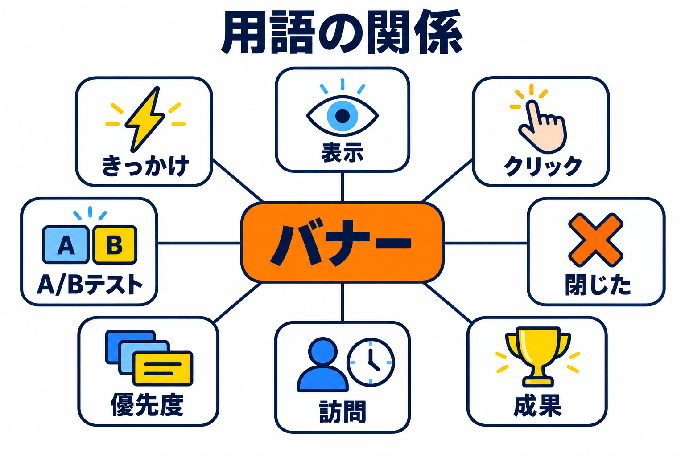

用語集
このマニュアルと管理画面で使う言葉の意味をまとめています。

バナーとまわりの言葉の関係
バナーと表示
| 用語 | 意味 |
|---|
| バナー | 訪問者に表示する案内のかたまりです。画像・見出し・説明文・ボタン・サブリンクでできています。 |
| 表示形式 | バナーの出方です。中央ポップアップ・下部バナー・隅からのスライド表示の3つがあります。 |
| 中央ポップアップ | 画面を暗くして中央に出す形式です。閉じるまでページは操作できません。 |
| 下部バナー | 画面のいちばん下に横長の帯で出す形式です。 |
| 隅からのスライド表示 | 画面の隅に小さなカードを滑り込ませる形式です。 |
| サブリンク | ボタンの横に出す、下線付きの小さなリンクです。 |
| テンプレート | よくある目的の見出し・説明文・ボタンの文言のひな形です。 |
| プレビュー | 編集画面の右側で、保存する前の見た目を確かめる表示です。 |
| テスト表示 | 保存したバナーをサイトのトップページで試す機能です。集計には記録しません。 |
タイミングと条件
| 用語 | 意味 |
|---|
| きっかけ | バナーを表示する合図です。マウスが上端から外に出た（PC）、上に戻るスクロールをした（スマホ）、○秒見た、○％までスクロールした、の4つがあります。 |
| 離れそうな瞬間 | ページを離れようとしていると考えられる瞬間です。PC はマウスが画面の上端から外に出たとき、スマホは上に戻るスクロールをしたときを指します。 |
| 感度 | マウスが上端からどれくらい近くで外に出たら反応するかの度合いです。 |
| 開いた直後 | ページを開いてから、バナーを表示しない秒数のことです。 |
| 組み合わせ | きっかけを2つ以上選んだときに、どれか1つで表示するか、すべてそろったら表示するかの決まりです。 |
| 表示しないページ | 表示する場所に当てはまっても、バナーを表示しないページです。 |
| 訪問 | 同じ人がサイトを続けて見ている一続きの時間です。ページを見なくなってから 30 分たつと、次の訪問になります。 |
| 掲載期間 | バナーを表示する期間です。 |
| 優先度 | 複数のバナーのきっかけが同時に起きたときに、どれを表示するかを決める数字です。大きいほうを表示します。 |
| 流入元（utm_source） | ページの URL に付けた utm_source= の値です。どの宣伝のリンクから来たかを表すときに使われます。 |
| 参照元 | 訪問者が直前に見ていたページ（来たサイト）です。 |
状態
| 用語 | 意味 |
|---|
| 表示中 | 公開中で、いまサイトに表示されるバナーです。 |
| 表示予定 | 公開中ですが、掲載期間がまだ始まっていないバナーです。 |
| 掲載終了 | 公開中ですが、掲載期間が終わったバナーです。 |
| 停止中 | 公開中ですが、「サイトに表示する」をオフにしたバナーです。 |
| 下書き / 公開予約 | まだ公開していないバナー / 公開する日時を予約したバナーです。 |
集計
| 用語 | 意味 |
|---|
| 表示（回数） | バナーを表示した回数です。 |
| クリック | バナーのボタンが押された回数です。 |
| クリック率 | クリック ÷ 表示 の割合です。 |
| 閉じた | バナーが閉じられた回数です。 |
| 成果 | バナーを見た（またはクリックした）人が、成果ページに来た回数です。 |
| 成果ページ | 購入完了・問い合わせ完了など、目的を果たしたときに開くページとして指定したページです。 |
| 成果率 | 成果 ÷ 表示 の割合です。 |
| A/Bテスト | 2つのパターンを訪問者に出し分けて、結果を比べる方法です。 |
| パターン | A/B テストで比べる案（A と B）です。 |
| ログ | 表示・クリック・閉じた・成果の1回ずつの記録です。集計のもとになります。 |
| 計測 | ログを記録することです。設定タブでオン・オフします。 |
| トラッキング拒否（Do Not Track） | 行動の記録を断る、ブラウザの設定です。 |
| 同意の Cookie | Cookie の同意バナーで、訪問者が同意したかどうかを保存している Cookie です。 |